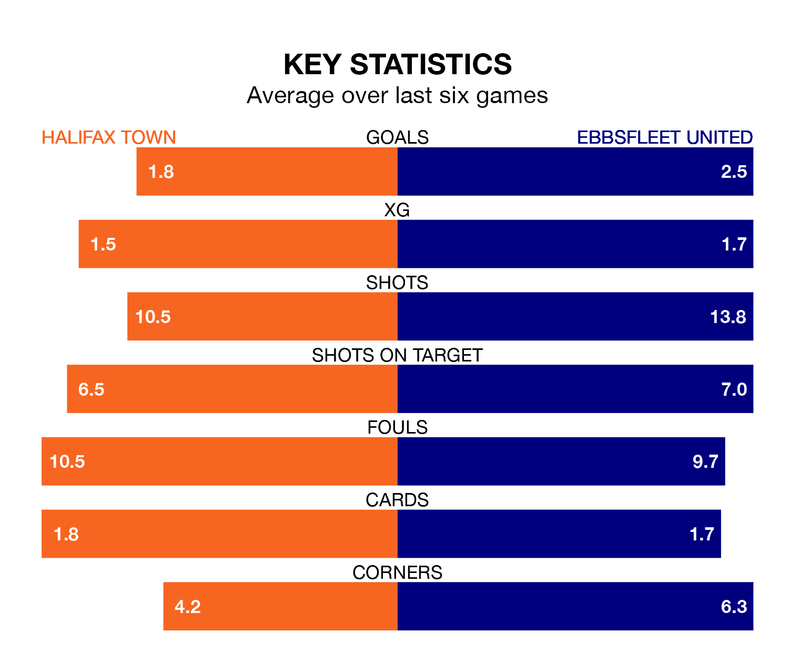

Halifax Town host Ebbsfleet United at the Shay Stadium on Saturday on the back of three consecutive wins in the National League.
Halifax have picked up 15 points from their last six games, and they face an Ebbsfleet side who also won their last match, and have collected the same number of points from the last possible 18.
In the last 10 years, Halifax and Ebbsfleet have played each other on eight occasions. Halifax won two of them, Ebbsfleet five, and they drew once.
On average, the Shaymen scored 1.0 goal and Ebbsfleet 1.5 in those matches.
Their last meeting was on October 7, when Halifax won 2-0 away.
Halifax are sixth in the table after 39 games, of which they have won 17 and drawn 11, earning 62 points.
Ebbsfleet are nine places behind Town in 15th, with 13 wins and eight draws putting them on 47 points.
With 50 goals in 39 games so far this season, the Shaymen are scoring at below the league average rate with 1.3 goals per game. But they are conceding fewer than average too, letting in 44 goals at a rate of 1.1 per game.
United are also below average scorers, with 1.4 goals per game, compared to a league average of 1.5. They have conceded 1.7 goals per game.
Halifax's last match was on Wednesday, a 4-2 win against Chesterfield, with Robert William Harker (two), Aaron Cosgrove and Andrew Oluwabori getting the goals for the Shaymen.
Ebbsfleet beat Gateshead 4-2 last time out, on March 16, with Rakish Phillip Bingham (three) and Dominic Samuel on the scoresheet.
Updated: 10:19 (UTC), 22/03/24